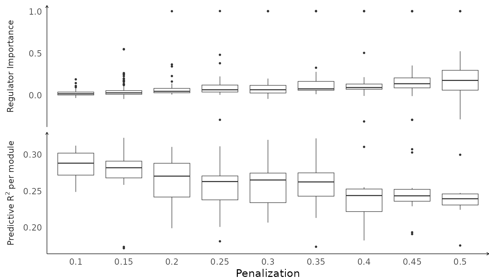

The purpose of this vignette is to show how to manually configure the
is_regulator vector, e.g. when you want to run
scregclust on a custom set of regulators (not TFs or kinases),
or if your data is from an organism other than human, e.g. mouse. This
vignette will show how to do this using a data set from the mouse brain
(GSE60361),
and a list
of mouse TFs provided by Aertslab.
We use Seurat for pre-processing of the data.
Read in the data and preprocess it in Seurat. Here, we simply use the full dataset. In practice, you would perform additional quality checks and, e.g., investigate PCA, UMAP, or TSNE plots of the data. We use the package GEOquery to download meta data for the data.
# Download the gene expression data
url <- paste0(
"https://www.ncbi.nlm.nih.gov/geo/download/",
"?acc=GSE60361&format=file&",
"file=GSE60361%5FC1%2D3005%2DExpression%2Etxt%2Egz"
)
expr_path <- file.path(tempdir(), "Expression.txt.gz")
download.file(url, expr_path, cacheOK = FALSE, mode = "wb")
# Load the gene expression data
expr <- read.table(
expr_path,
header = TRUE,
sep = "\t",
stringsAsFactors = FALSE,
fill = TRUE
)
# A few gene symbols appear as duplicates, make unique.
gene_symbols <- make.unique(expr[, 1], sep = "-")
expr <- expr[, -1]
rownames(expr) <- gene_symbols
# Download meta data
gse <- getGEO("GSE60361")
meta_data <- pData(phenoData(gse[[1]]))
# Sample names are stored in the meta data's row names
sample_names <- rownames(meta_data)
colnames(expr) <- sample_names
# Create Seurat object and preprocess the data using SCTransform
mouse <- CreateSeuratObject(
counts = expr,
min.cells = 3,
min.features = 500,
meta.data = meta_data
)
mouse <- SCTransform(mouse, verbose = TRUE)The built in transcription factor lists in scregclust are for human transcription factors (TFs) and kinases. Download and read in a list of mouse-specific TFs.
url <- "https://resources.aertslab.org/cistarget/tf_lists/allTFs_mm.txt"
tfs_path <- file.path(tempdir(), "allTFs_mm.txt")
download.file(url, tfs_path, cacheOK = FALSE, mode = "w")
tfs <- read.table(
tfs_path,
header = FALSE,
sep = "\t",
stringsAsFactors = FALSE
)
tfs <- tfs[, 1]Extract gene x cells table
z <- GetAssayData(mouse, layer = "scale.data")
dim(z)
#> [1] 3000 3005Make sure data is in the format for scregclust
out <- scregclust_format(z, mode = "TF")
genesymbols <- out$genesymbols
sample_assignment <- out$sample_assignmentManually create the indicator vector is_regulator
Finally, run scregclust to estimate the model. The run can be reproduced with the command below. A pre-fitted model can be downloaded from GitHub for convenience.
# # Run scregclust
# set.seed(8374)
# fit <- scregclust(
# z, genesymbols, is_regulator, penalization = seq(0.1, 0.5, 0.05),
# n_modules = 10L, n_cycles = 50L, noise_threshold = 0.05
# )
# saveRDS(fit, file = "datasets/mouse_scregclust.rds")
url <- paste0(
"https://github.com/scmethods/scregclust/raw/main/datasets/",
"mouse_scregclust.rds"
)
fit_path <- file.path(tempdir(), "mouse_scregclust.rds")
download.file(url, fit_path)
fit <- readRDS(fit_path)Visualize the fit
plot(fit)